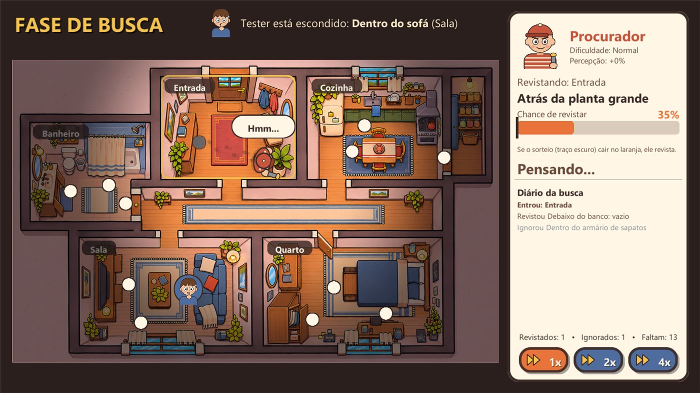
Um jogo 2D de esconde-esconde onde o jogador tem um tempo limitado para se esconder dentro de uma casa antes que o Procurador comece a procurá-lo. A casa tem cinco cômodos (Entrada, Sala, Cozinha, Quarto e Banheiro) e cada um tem três esconderijos fixos, totalizando quinze lugares possíveis.
O jogo possui duas fases: uma para o jogador se esconder e outra para o procurador procurá-lo.
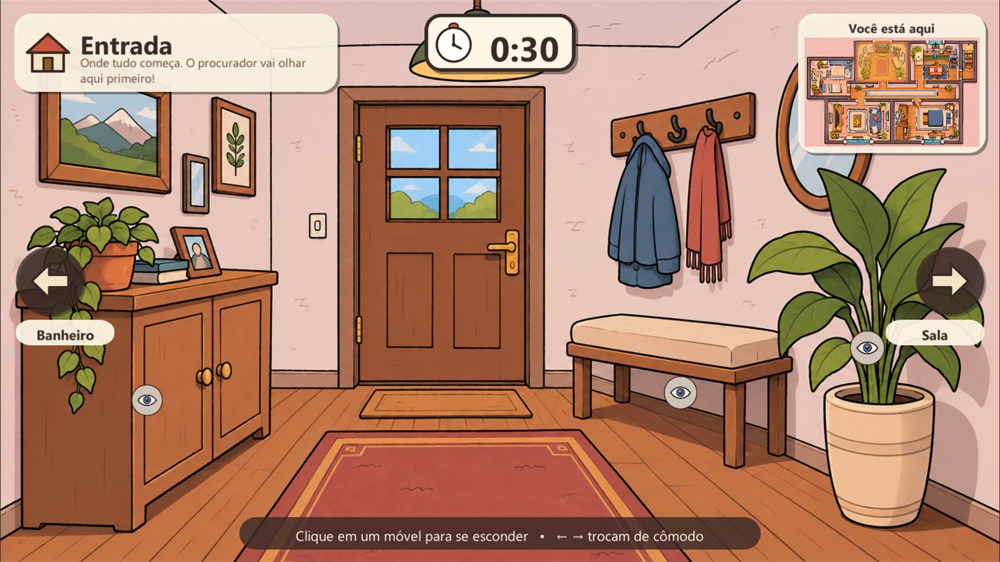
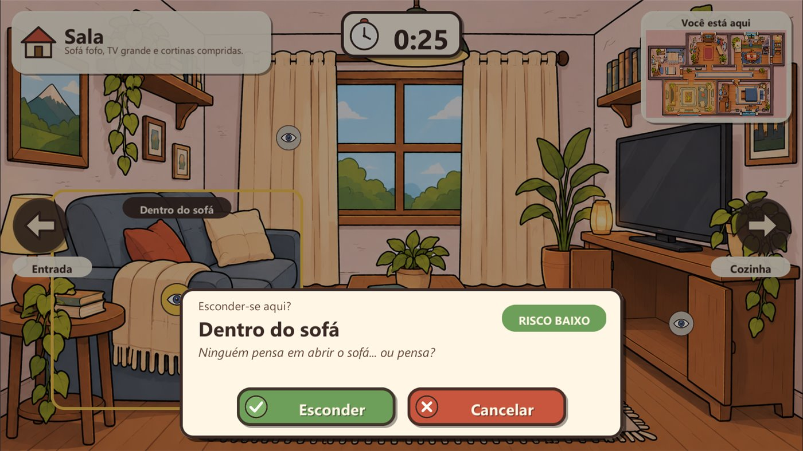
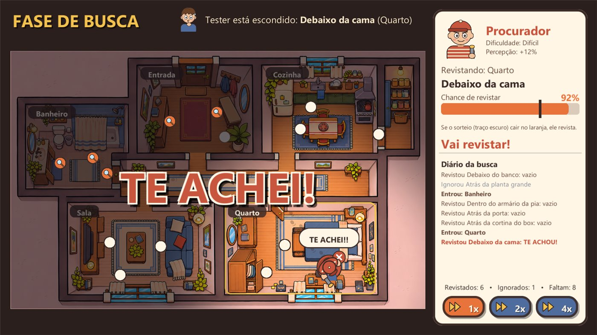
Escolher um esconderijo pouco óbvio antes de o tempo acabar e torcer para o Procurador não revistá-lo. Como o procurador tem memória (+15% de chance nos lugares onde já encontrou o jogador), repetir sempre o mesmo esconderijo fica cada vez mais arriscado.
| Mecânica | Onde está no código |
|---|---|
| Temporizador da preparação | GerenciadorJogo.AtualizarTempoPreparacao(float) |
| Andar entre cômodos | GerenciadorJogo.MoverJogadorPara(string) → Jogador.MoverParaComodo(Comodo) |
| Selecionar / confirmar / sair do esconderijo | Jogador.SelecionarEsconderijo, ConfirmarEsconderijo, SairDoEsconderijo |
| Acelerar o tempo | GerenciadorJogo.PularPreparacao() |
| Sorteio da investigação | Procurador.CalcularChance(Esconderijo) + InvestigarEsconderijo(Esconderijo, bool) |
| Memória do procurador | Procurador.Lembrar(string) / VezesQueEncontrouEm(string) (Dictionary) |
| Dificuldade | GerenciadorJogo.ObterParametros(Dificuldade) |
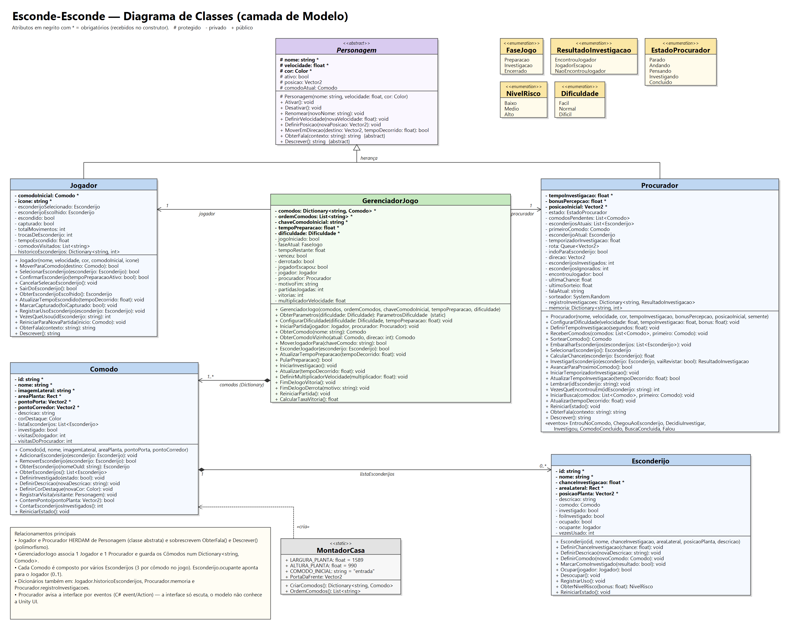
O código foi dividido em duas camadas:
Assets/Scripts/Modelo): classes C# puras, com as regras do jogo. São as classes
do diagrama acima e não dependem de nada visual.Assets/Scripts/Interface): componentes da Unity (MonoBehaviour) que desenham as
telas, tocam os sons e repassam os cliques para o modelo. O modelo avisa a interface por eventos
(event Action<...>), então ele não conhece a interface.Personagem é a classe mãe abstrata; Jogador e Procurador são as classes filhas.
base(nome, velocidade, cor).nome, velocidade, cor, ativo, posicao,
comodoAtual e os métodos Ativar(), Desativar(), MoverEmDirecao(...).ObterFala(string) e Descrever() são sobrescritos (override)
em cada filha: o jogador fala "Shhh... ninguém vai me achar aqui!", o procurador fala "TE ACHEI!!" (polimorfismo).Tela (abstrata) → TelaMenu, TelaEsconder,
TelaProcura, TelaResultado.| Dicionário | Para que serve |
|---|---|
GerenciadorJogo.comodos : Dictionary<string, Comodo> | todos os cômodos da casa, acessados pela chave ("entrada", "sala"...) |
Jogador.historicoEsconderijos : Dictionary<string, int> | quantas vezes o jogador usou cada esconderijo |
Procurador.memoria : Dictionary<string, int> | onde o procurador já encontrou o jogador (aumenta a chance) |
Procurador.registroInvestigacoes : Dictionary<string, ResultadoInvestigacao> | o resultado de cada esconderijo na busca atual |
| Classe concreta | Atributos | Obrigatórios (construtor) | Métodos com parâmetros |
|---|---|---|---|
| Jogador | 17 11 + 6 herdados | nome, velocidade, cor, comodoInicial, icone (5) | MoverParaComodo, SelecionarEsconderijo, ConfirmarEsconderijo, AtualizarTempoEscondido, MarcarCapturado, RegistrarUsoEsconderijo, VezesQueUsou, ReiniciarParaNovaPartida, ObterFala (9) |
| Procurador | 27 21 + 6 herdados | nome, velocidade, cor, tempoInvestigacao, bonusPercepcao, posicaoInicial (6) | ConfigurarDificuldade, DefinirTempoInvestigacao, ReceberComodos, EmbaralharEsconderijos, CalcularChance, InvestigarEsconderijo, AtualizarTempoInvestigacao, Lembrar, VezesQueEncontrouEm, IniciarBusca, Atualizar, ObterFala (12) |
| Comodo | 12 | id, nome, imagemLateral, areaPlanta, pontoPorta, pontoCorredor (6) | AdicionarEsconderijo, RemoverEsconderijo, ObterEsconderijo, DefinirInvestigado, DefinirDescricao, DefinirCorDestaque, RegistrarVisita, ContemPonto (8) |
| Esconderijo | 12 | id, nome, chanceInvestigacao, areaLateral, posicaoPlanta (5) | DefinirChanceInvestigacao, DefinirDescricao, DefinirComodo, MarcarComoInvestigado, Ocupar, ObterNivelRisco (6) |
| GerenciadorJogo | 17 | comodos, ordemComodos, chaveComodoInicial, tempoPreparacao, dificuldade (5) | ConfigurarDificuldade, IniciarPartida, ObterComodo, ObterComodoVizinho, MoverJogadorPara, EsconderJogador, AtualizarTempoPreparacao, Atualizar, DefinirMultiplicadorVelocidade, FimDeJogoDerrota (10) |
Os construtores validam os atributos obrigatórios e lançam ArgumentException se vierem vazios ou inválidos.
GerenciadorJogo → 1 Jogador e 1 Procurador (associação).GerenciadorJogo ◆→ vários Comodo (composição, guardados no dicionário).Comodo ◆→ vários Esconderijo (composição; 3 por cômodo). Esconderijo.ocupante → Jogador (0..1).MontadorCasa (classe estática, "fábrica") cria os 5 cômodos e os 15 esconderijos.Idealização inicial do funcionamento do jogo, com o cenário, suas divisões e os esconderijos com suas chances de investigação:
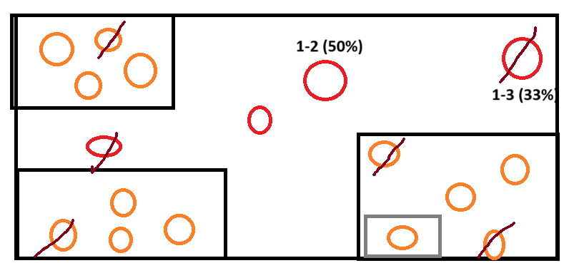
Rascunho inicial do UML, que serviu de base para o diagrama final (o final ganhou mais atributos e métodos para atender aos requisitos e às mecânicas novas, como dificuldade e memória do procurador):
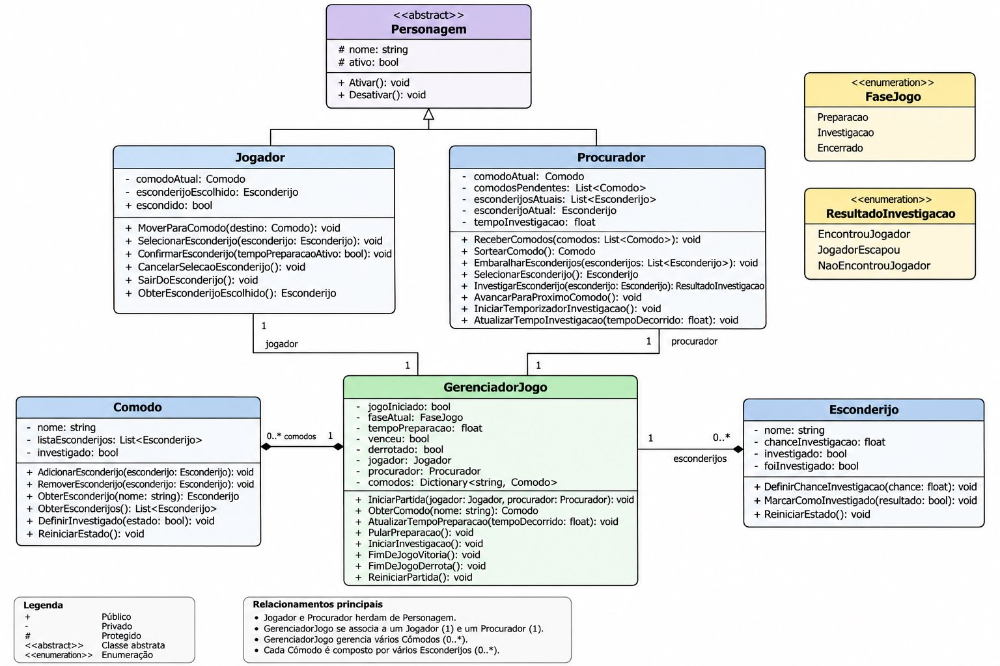
Cenários desenhados pela equipe: os cinco cômodos em visão lateral (fase de esconder) e a planta da casa vista de cima (fase de busca).
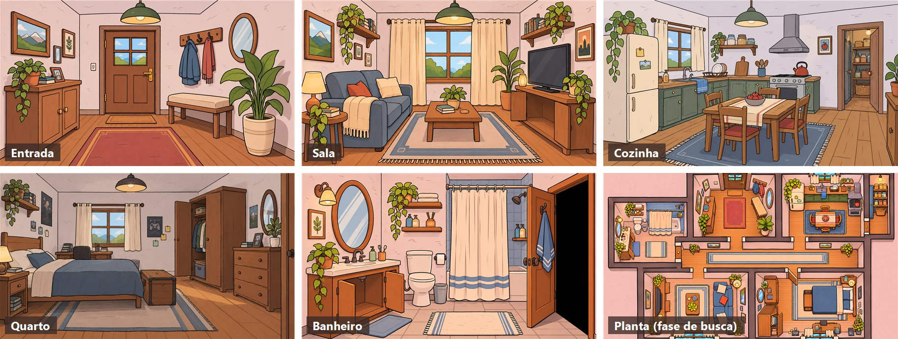
Personagens, ícones e logo criados para o jogo, no mesmo estilo (contorno marrom e cores quentes):
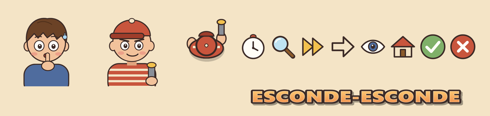
Todo o áudio é gerado por código (SomJogo.cs), sem arquivos externos: uma trilha de suspense em
lá menor em loop (baixo "pé ante pé" e melodia), tique-taque nos últimos 10 segundos, batida de coração quando o
procurador chega no esconderijo do jogador, som de porta ao trocar de cômodo e jingles de vitória e derrota.
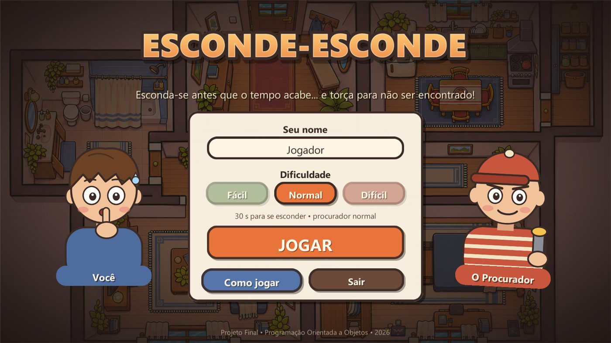
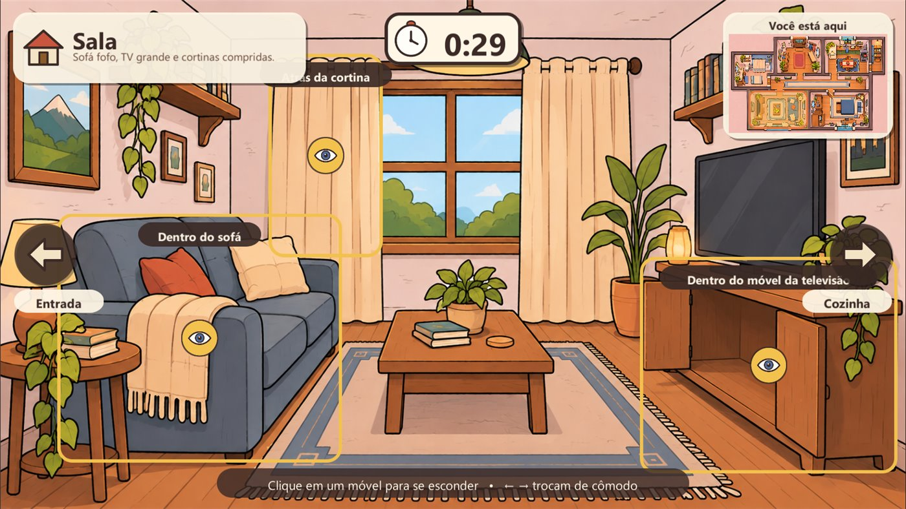
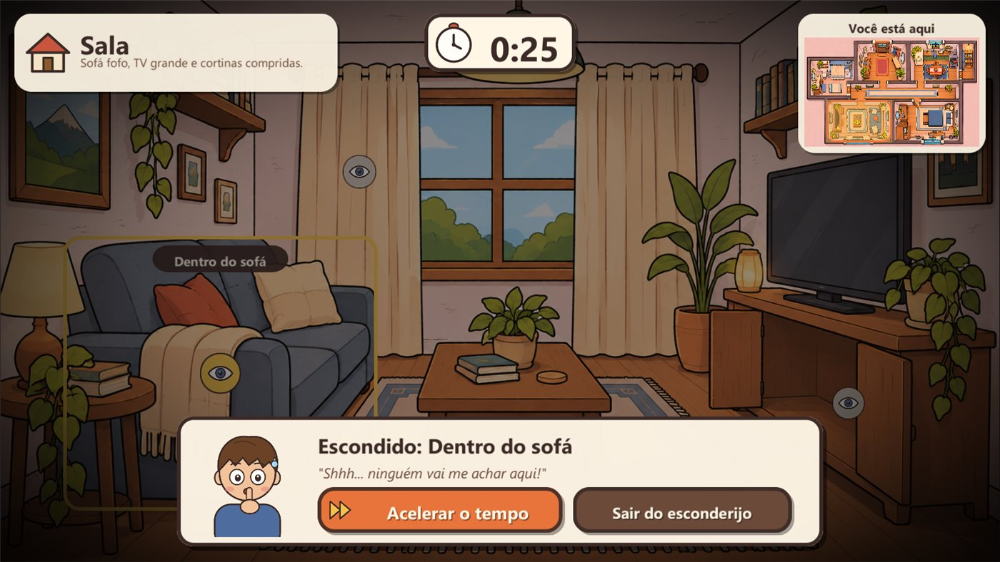
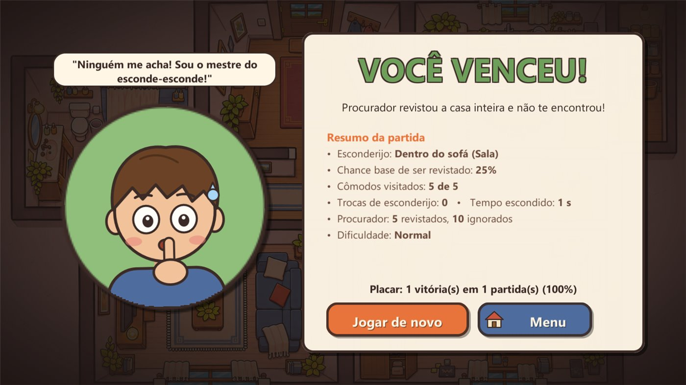
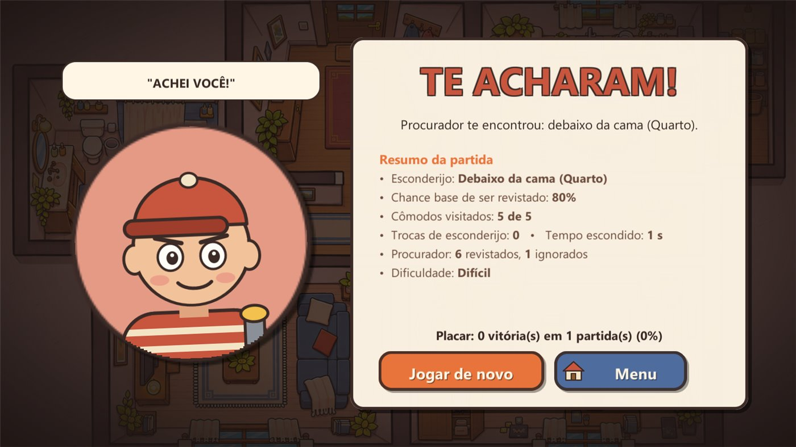
| Esconderijo | Cômodo | Chance base de ser revistado |
|---|---|---|
| Dentro do armário de sapatos | Entrada | 50% |
| Debaixo do banco | Entrada | 70% |
| Atrás da planta grande | Entrada | 35% |
| Atrás da cortina | Sala | 60% |
| Dentro do móvel da televisão | Sala | 40% |
| Dentro do sofá | Sala | 25% |
| Dentro do armário inferior | Cozinha | 45% |
| Debaixo da mesa | Cozinha | 75% |
| Dentro da despensa | Cozinha | 35% |
| Debaixo da cama | Quarto | 80% |
| Dentro do guarda-roupa | Quarto | 55% |
| Dentro do baú | Quarto | 30% |
| Dentro do armário da pia | Banheiro | 50% |
| Atrás da porta | Banheiro | 40% |
| Atrás da cortina do box | Banheiro | 65% |
Dificuldade: Fácil = −10% em todas as chances, Normal = +0%, Difícil = +12%. Memória: +15% em cada lugar onde o procurador já encontrou o jogador.
O projeto é versionado com Git e hospedado no GitHub (github.com/chicodamassa/EscondeEsconde,
branch main). Cada etapa do desenvolvimento virou um commit: git add dos arquivos daquela
etapa, git commit com uma mensagem explicando a mudança e, no fim, git push para o GitHub.
O .gitignore deixa de fora as pastas que a Unity recria sozinha (Library, Temp,
Logs) e o executável (Build).
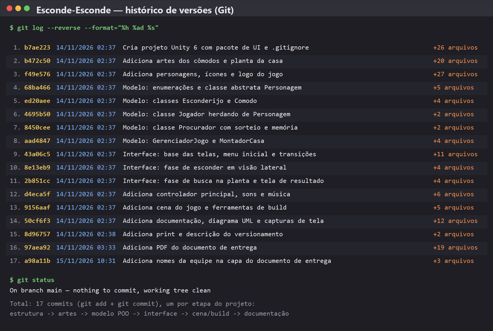
| # | Commit | O que foi feito |
|---|---|---|
| 1 | Cria projeto Unity 6 com pacote de UI e .gitignore | estrutura inicial e configurações |
| 2 | Adiciona artes dos cômodos e planta da casa | artes da equipe + importador automático de sprites |
| 3 | Adiciona personagens, ícones e logo do jogo | retratos, procurador visto de cima, ícones e logo |
| 4 | Modelo: enumerações e classe abstrata Personagem | classe mãe da herança |
| 5 | Modelo: classes Esconderijo e Comodo | composição Comodo → Esconderijos |
| 6 | Modelo: classe Jogador herdando de Personagem | primeira classe filha |
| 7 | Modelo: classe Procurador com sorteio e memória | segunda classe filha, máquina de estados e dicionários |
| 8 | Modelo: GerenciadorJogo e MontadorCasa | regras da partida e dicionário de cômodos |
| 9 | Interface: base das telas, menu inicial e transições | classe abstrata Tela e menu |
| 10 | Interface: fase de esconder em visão lateral | áreas clicáveis, relógio, setas, mini-mapa |
| 11 | Interface: fase de busca na planta e tela de resultado | procurador andando, sorteio, diário, resultado |
| 12 | Adiciona controlador principal, sons e música | ligação modelo ↔ telas e áudio por código |
| 13 | Adiciona cena do jogo e ferramentas de build | cena Jogo.unity e geração do executável |
| 14 | Adiciona documentação, diagrama UML e capturas de tela | documentação e imagens |
| 15 | Adiciona print e descrição do versionamento | imagem do histórico e tabela |
| 16 | Adiciona PDF do documento de entrega | este documento em PDF |
| 17 | Adiciona nomes da equipe na capa do documento de entrega | nomes dos integrantes na capa |
Build inteira para o computador (o .exe sozinho não funciona).EscondeEsconde.exe.EscondeEsconde.Assets/Scenes/Jogo.unity abre sozinha. Clique em Play ▶.Build. Se a cena não abrir, use Esconde-Esconde → 1. Montar cena do jogo.| Ação | Mouse | Teclado |
|---|---|---|
| Trocar de cômodo | setas nas laterais da tela | ← → (ou A / D) |
| Ver um esconderijo | clicar no móvel | — |
| Confirmar / cancelar | botões Esconder / Cancelar | Enter / Esc |
| Mostrar todas as áreas clicáveis | — | F1 |
| Velocidade da busca | botões 1x / 2x / 4x | — |
| Pasta | Conteúdo |
|---|---|
Assets/Scripts/Modelo | Personagem, Jogador, Procurador, Comodo, Esconderijo, GerenciadorJogo, MontadorCasa, Enumeracoes |
Assets/Scripts/Interface | ControladorJogo, telas (Menu, Esconder, Procura, Resultado), sons e utilitários de UI |
Assets/Scripts/Editor | importação das artes, montagem da cena e geração do executável |
Assets/Resources/Arte | artes dos cômodos, planta, personagens e ícones |
Documentacao | este documento, UML, capturas de tela e histórico de versões |